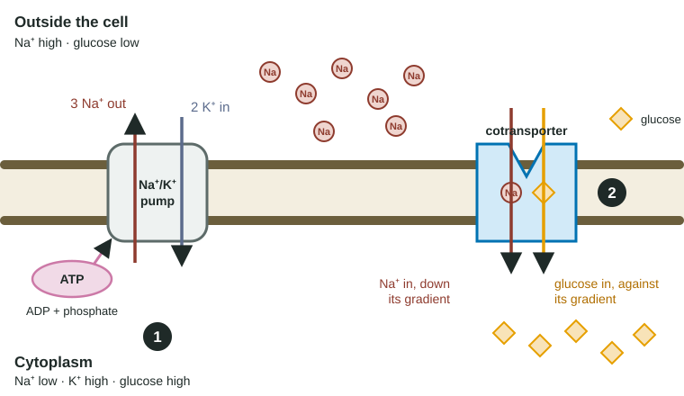

Mechanisms of Transport
Cells move substances by simple diffusion, facilitated diffusion, active transport and bulk transport, chosen by size, charge or polarity and gradient direction.
Part 1 · Hook
Why this matters
Cholera can drain a person of ten liters of fluid a day. A cheap packet of salt and sugar stirred into clean water has saved millions of those lives, and it works only because of one membrane protein in the gut that will not move sodium without bringing glucose along. That protein moves glucose uphill without ever touching ATP.
Part 2 · Before you start
What this builds on
Part 3 · Prerequisite check
Quick check before you start
1. What does the sodium-potassium pump do with each ATP it uses?
- Moves 3 Na⁺ out of the cell and 2 K⁺ in.
- Moves 3 Na⁺ into the cell and 2 K⁺ out.
- Moves 2 Na⁺ out of the cell and 3 K⁺ in.
- Lets Na⁺ and K⁺ flow down their gradients.
Show the answer
Three Na⁺ out, two K⁺ in, both against their gradients. That keeps Na⁺ crowded outside the cell.
- Correct: Moves 3 Na⁺ out of the cell and 2 K⁺ in.:
- Moves 3 Na⁺ into the cell and 2 K⁺ out.:
- Moves 2 Na⁺ out of the cell and 3 K⁺ in.:
- Lets Na⁺ and K⁺ flow down their gradients.:
2. Which describes active transport?
- Movement of a substance against its concentration gradient, using energy.
- Movement of a substance down its gradient through a channel.
- Movement of water toward the side with more solute.
- Movement of small nonpolar molecules through the bilayer.
Show the answer
Moving something from where it is scarce to where it is crowded needs an energy input; that is what makes transport active.
- Correct: Movement of a substance against its concentration gradient, using energy.:
- Movement of a substance down its gradient through a channel.:
- Movement of water toward the side with more solute.:
- Movement of small nonpolar molecules through the bilayer.:
3. A molecule is small, uncharged and nonpolar. How does it cross a membrane?
- By simple diffusion straight through the bilayer.
- Only through aquaporins.
- Only by endocytosis.
- Only by a pump that uses ATP.
Show the answer
Small nonpolar molecules dissolve in the hydrophobic middle of the bilayer and diffuse straight through.
- Correct: By simple diffusion straight through the bilayer.:
- Only through aquaporins.:
- Only by endocytosis.:
- Only by a pump that uses ATP.:
Part 4 · See it
See it first

Part 5 · Step by step
How it works, step by step
- A pump spends ATP directly to move ions against their gradient (primary active transport): the sodium-potassium pump in animal cells, the proton pump in plant cells.A steep gradient builds up: Na⁺ crowded outside animal cells, H⁺ crowded outside plant cells.
- A gradient is stored energy: the ions are pushed to flow back across the membrane.A cotransporter can open a path for them, but only if it can bring a second substance along.
- In the sodium-glucose cotransporter, two Na⁺ flow in down their gradient for every glucose carried in.Glucose is moved into the cell even when it is already more concentrated inside (symport: both in the same direction).
- Some cotransporters move the two substances in opposite directions (antiport).Na⁺ flowing in can push something else out, such as Ca²⁺ in heart muscle cells.
- If the pump stops, the ions that flow in are no longer pumped back out.The gradient runs down and cotransport fails too, even though the cotransporter never used ATP.
- Every substance has a size, a charge or polarity, and a gradient direction.Those three facts decide its route: simple diffusion, facilitated diffusion, a pump, cotransport or bulk transport.
Part 6 · Key ideas
Key ideas
- Primary active transport spends ATP directly. Cotransport (secondary active transport) spends a gradient that a primary pump built.
- Symport: both substances cross the same way (Na⁺ and glucose in). Antiport: opposite ways (Na⁺ in, Ca²⁺ out).
- Stop the pump and the cotransporter fails too, after a delay while the stored gradient runs down. That delay is a clue in data questions.
- Pick a route by asking three questions: Is it small and nonpolar? Is it moving down or against its gradient? Is it a single molecule or a large particle?
Part 7 · Misconception
A common mistake
The wrong idea: A cotransporter does not use ATP, so it is a kind of passive transport.
What actually happens: It moves one substance against its gradient, so it is active transport. The energy is real; it is just paid earlier, by the pump that built the gradient the cotransporter spends.
Part 8 · Check yourself
Check yourself
Exam-style questions. Anything you miss goes into your review queue.
Graph
Glucose build-up in intestinal cells
Researchers placed samples of intestinal lining cells in a solution containing 5 mM glucose and followed the glucose concentration inside the cells. The graph shows the ratio of glucose inside the cells to glucose outside. Three conditions were tested: a normal salt solution (control); the same solution with all Na⁺ replaced by an equal concentration of choline (a positive ion that cells do not carry across the membrane); and the normal solution plus ouabain, a drug that stops the sodium-potassium pump. Points are means of four samples; error bars show ±2 standard errors.
ControlNa⁺ replaced by cholineOuabain
Data table
| Time (min) | Control (± error) | Na⁺ replaced by choline (± error) | Ouabain (± error) |
|---|---|---|---|
| 0 | 0 | 0 | 0 |
| 5 | 1.6 ± 0.2 | 0.4 ± 0.1 | 1.4 ± 0.2 |
| 10 | 2.9 ± 0.3 | 0.7 ± 0.1 | 2 ± 0.2 |
| 15 | 3.9 ± 0.3 | 0.9 ± 0.1 | 1.8 ± 0.2 |
| 20 | 4.5 ± 0.3 | 1 ± 0.1 | 1.5 ± 0.2 |
| 30 | 5 ± 0.4 | 1 ± 0.1 | 1.1 ± 0.1 |
1. Which observation shows that, in the control, glucose was moved into the cells against its concentration gradient?
- After about 5 minutes the ratio rises above 1, and it reaches 5.0 by 30 minutes.
- The ratio rises fastest during the first 5 minutes and then more slowly.
- The control ratio is higher than the ouabain ratio at each time point after 10 minutes.
- The error bars for the control grow larger as the experiment goes on.
Show the answer
A ratio above 1 means glucose is more concentrated inside than outside. Glucose kept entering after that point, so it was moving from low to high concentration.
- Correct: After about 5 minutes the ratio rises above 1, and it reaches 5.0 by 30 minutes.: Correct: once the ratio passes 1, each further rise means glucose moving uphill, into the more concentrated side.
- The ratio rises fastest during the first 5 minutes and then more slowly.: A fast start then slowing happens in passive transport too; on its own it says nothing about direction relative to the gradient.
- The control ratio is higher than the ouabain ratio at each time point after 10 minutes.: This compares two conditions; it shows ouabain matters, but not that the control moved glucose uphill.
- The error bars for the control grow larger as the experiment goes on.: Error bars show how much the samples varied, not which way glucose moved.
2. Which explanation best accounts for the results when Na⁺ was replaced by choline?
- With no Na⁺ gradient to drive the cotransporter, glucose entered only passively and stopped at a ratio of 1.
- Choline entered the cells through the cotransporter in place of Na⁺, and it carried glucose in more slowly than Na⁺ does.
- Without Na⁺ the cells could not make ATP, so the glucose cotransporter had no energy and glucose could not enter.
- Choline made the outside solution hypertonic, so water left the cells and glucose became trapped outside them.
Show the answer
Glucose climbs its gradient only by riding along with Na⁺ flowing down Na⁺'s gradient. Remove outside Na⁺ and that energy source is gone; glucose can still move passively, but only until the inside equals the outside (ratio 1.0).
- Correct: With no Na⁺ gradient to drive the cotransporter, glucose entered only passively and stopped at a ratio of 1.: Correct: without Na⁺ flowing in, nothing pays for uphill glucose movement, so the ratio stops at 1.
- Choline entered the cells through the cotransporter in place of Na⁺, and it carried glucose in more slowly than Na⁺ does.: The cotransporter is specific for Na⁺; if choline could drive it, glucose would still pile up above a ratio of 1, which it does not.
- Without Na⁺ the cells could not make ATP, so the glucose cotransporter had no energy and glucose could not enter.: The cotransporter does not use ATP directly; and glucose did enter, reaching a ratio of 1.0.
- Choline made the outside solution hypertonic, so water left the cells and glucose became trapped outside them.: Na⁺ was replaced by an equal concentration of choline, so the solution's solute level did not change.
3. With ouabain, glucose built up for about 10 minutes and then fell back toward a ratio of 1. Which explanation fits best?
- The existing Na⁺ gradient drove uptake at first, but with the pump stopped it ran down and glucose leaked out.
- Ouabain needed about 10 minutes to enter the cells, and then it blocked the glucose cotransporter directly.
- Ouabain stopped the cells from making ATP after 10 minutes, so the cotransporter ran out of the energy it uses directly.
- The cells used up the glucose they had taken in for energy, which lowered the inside concentration after 10 minutes.
Show the answer
A gradient is stored energy. When the pump stops, the Na⁺ gradient built before the drug was added still powers the cotransporter, but Na⁺ entering is no longer pumped out. As the gradient runs down, it can no longer hold glucose above the outside level.
- Correct: The existing Na⁺ gradient drove uptake at first, but with the pump stopped it ran down and glucose leaked out.: Correct: the stored gradient lasts a while, then runs down without the pump to rebuild it.
- Ouabain needed about 10 minutes to enter the cells, and then it blocked the glucose cotransporter directly.: Ouabain acts on the sodium-potassium pump, not the cotransporter; the delay comes from the gradient running down.
- Ouabain stopped the cells from making ATP after 10 minutes, so the cotransporter ran out of the energy it uses directly.: Ouabain stops the pump from using ATP; it does not stop ATP production. The cotransporter uses the Na⁺ gradient, not ATP.
- The cells used up the glucose they had taken in for energy, which lowered the inside concentration after 10 minutes.: If the cells were using glucose, the control would show the same fall. It keeps rising, so the fall must come from the pump being stopped.
4. Why did the researchers replace Na⁺ with an equal concentration of choline, instead of simply leaving the Na⁺ out?
- To keep total solute concentration the same, so water movement did not become a second variable.
- To give the cells another ion they could use in place of Na⁺ to drive glucose into the cells.
- To make sure the sodium-potassium pump had enough K⁺ to keep working at its normal rate.
- To raise the electrical charge of the solution, so that glucose would be attracted into the cells.
Show the answer
Simply removing Na⁺ would make the solution hypotonic to the cells, so they would swell. Then any change in glucose uptake could come from the swelling instead of the missing Na⁺. Swapping in choline, an ion the cells do not transport, changes one variable only.
- Correct: To keep total solute concentration the same, so water movement did not become a second variable.: Correct: matching total solute keeps the solution isotonic, so the only difference from the control is which ion is present.
- To give the cells another ion they could use in place of Na⁺ to drive glucose into the cells.: The point of the condition is to remove the ion that drives glucose uphill, not to replace its job.
- To make sure the sodium-potassium pump had enough K⁺ to keep working at its normal rate.: Normal solutions already contain K⁺; the swap was about keeping solute concentration constant.
- To raise the electrical charge of the solution, so that glucose would be attracted into the cells.: Glucose is uncharged, so the solution's charge would not attract it; and swapping one positive ion for another leaves the charge unchanged.
5. In the control, the outside glucose concentration stayed at 5 mM. What was the glucose concentration inside the cells at 30 minutes, in mM?
Type a number in mM.
Show the answer
Inside ÷ outside = 5.0, so inside = 5.0 × 5 mM = 25 mM: five times the outside level, built by cotransport with Na⁺.
- Answer: 25 mM
6. What distinguishes primary active transport from secondary active transport (cotransport)?
- Primary uses ATP directly; secondary uses the energy stored in a gradient that a pump built.
- Primary moves substances down their gradient; secondary moves them against their gradient.
- Primary moves ions; secondary moves large molecules inside vesicles.
- Primary needs a transport protein; secondary happens through the lipid bilayer itself.
Show the answer
Both move a substance uphill. The difference is the energy source: ATP spent on the protein itself (primary) or an existing gradient of another substance (secondary).
- Correct: Primary uses ATP directly; secondary uses the energy stored in a gradient that a pump built.: Correct: the source of energy separates them.
- Primary moves substances down their gradient; secondary moves them against their gradient.: Both kinds of active transport move something against its gradient; that is what makes them active.
- Primary moves ions; secondary moves large molecules inside vesicles.: Moving molecules in vesicles is bulk transport. Cotransport moves single ions and molecules through proteins.
- Primary needs a transport protein; secondary happens through the lipid bilayer itself.: Both require membrane proteins: a pump for primary, a cotransporter for secondary.
7. Heart muscle cells remove calcium using an exchanger that lets three Na⁺ flow into the cell while it carries one Ca²⁺ out. How is this transporter best described?
- An antiporter: the two ions cross in opposite directions, and Na⁺ flowing in powers Ca²⁺ moving out.
- A symporter: the two ions cross together, and both move down their gradients at the same time.
- A pump: it spends ATP directly to push both Na⁺ and Ca²⁺ against their gradients.
- A channel: it forms an open tunnel through which both ions pass in whichever direction they are pushed.
Show the answer
Opposite directions makes it an antiporter. Na⁺ enters down its gradient (built by the sodium-potassium pump), and that flow pays for pushing Ca²⁺ out against its gradient: cotransport.
- Correct: An antiporter: the two ions cross in opposite directions, and Na⁺ flowing in powers Ca²⁺ moving out.: Correct: opposite directions, and one ion's downhill flow drives the other uphill.
- A symporter: the two ions cross together, and both move down their gradients at the same time.: A symporter moves both substances the same way; here Na⁺ comes in while Ca²⁺ goes out.
- A pump: it spends ATP directly to push both Na⁺ and Ca²⁺ against their gradients.: No ATP is used by this protein; the energy comes from the Na⁺ gradient.
- A channel: it forms an open tunnel through which both ions pass in whichever direction they are pushed.: A channel lets one kind of ion run downhill; it cannot push a second ion out against its gradient.
8. A small, nonpolar molecule is more concentrated outside a cell than inside. Which route will most of it take into the cell?
- Simple diffusion straight through the lipid bilayer, with no protein and no ATP needed
- Facilitated diffusion through a specific carrier protein, because it moves down its gradient
- Cotransport with Na⁺, because the cell keeps a steep Na⁺ gradient across its membrane
- Active transport by a pump, because the cell controls which molecules may enter it
Show the answer
Size, polarity, charge and gradient direction decide the route. Small and nonpolar means it dissolves in the bilayer; down its gradient means no energy is needed.
- Correct: Simple diffusion straight through the lipid bilayer, with no protein and no ATP needed: Correct: small nonpolar molecules such as O₂ and CO₂ diffuse straight through the bilayer.
- Facilitated diffusion through a specific carrier protein, because it moves down its gradient: A carrier is needed for molecules the bilayer blocks, such as glucose; a small nonpolar molecule does not need one.
- Cotransport with Na⁺, because the cell keeps a steep Na⁺ gradient across its membrane: Cotransport is for moving something uphill; this molecule is already moving downhill.
- Active transport by a pump, because the cell controls which molecules may enter it: Pumps move substances against their gradient; nothing needs to be spent to let this molecule in.
Part 9 · Summary
Summary
Cells move substances by simple diffusion, facilitated diffusion, active transport and bulk transport, chosen by size, charge or polarity and gradient direction. Primary active transport spends ATP directly (the sodium-potassium pump, the proton pump) and builds ion gradients. Cotransport spends those gradients: a symporter such as the sodium-glucose cotransporter lets Na⁺ flow in and carries glucose in against its gradient; an antiporter moves the second substance the opposite way. If the pump stops, the gradient runs down and cotransport stops with it.
Part 10 · Up next
What comes next
Part 11 · Connections